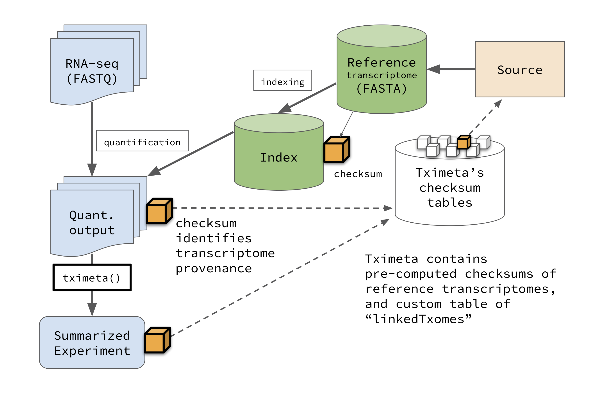

For a reference and citation for tximeta:
Michael I. Love, Charlotte Soneson, Peter F. Hickey, Lisa K. Johnson, N. Tessa Pierce, Lori Shepherd, Martin Morgan, Rob Patro. “Tximeta: reference sequence checksums for provenance identification in RNA-seq” PLOS Computational Biology (2020) doi: 10.1371/journal.pcbi.1007664

Quantification methods Salmon and Alevin propogate a hashed checksum of the transcriptome sequence into the index and quantification directories. The signature is a SHA256 hash of the transcriptome cDNA sequence, excluding transcript identifiers (this may change going forward, to enable coordination with larger efforts at data-driven identifiers for collections of sequences, see the last section of vignette for details).
Following quantification, and even performed by a different analyst or at a different institute, when importing quantifications into R/Bioconductor, tximeta checks a local database of known transcriptome checksums (see the vignette for up-to-date list), and upon finding a match, automatically adds annotation and metadata to the quantifications, returning a SummarizedExperiment object. Examples of metadata include transcript locations, transcript and genome source and version, appropriate chromosome lengths, etc. This ensures computational reproducibility by attaching critical annotation information to the data object, such that exact quantifications can be reproduced from raw data (all software versions are also attached to the data object).
Other quantifiers can also be used as long as these alternative tools are wrapped in workflows that include metadata information JSON files along with each quantification file, storing the reference transcript checksum. See vignette for details, and the customMetaInfo argument details in ?tximeta.
tximeta performs numerous annotation and metadata gathering tasks on behalf of users during the import of transcript quantifications from Salmon or Alevin into R/Bioconductor. The goal is to provide something similar to the experience of GEOquery, which downloaded microarray expression data from NCBI GEO and simultaneously brought along associated pieces of metadata. Doing this automatically helps to prevent costly bioinformatic errors. To use tximeta, all one needs is the quant directory output from Salmon or Alevin.
The key idea within tximeta is to store a hashed checksum of the transcriptome sequence itself using the SHA256 hash, computed and stored by the index and quant functions of Salmon and Alevin. This checksum acts as the identifying information for later building out rich annotations and metadata in the background, on behalf of the user. This should greatly facilitate genomic workflows, where the user can immediately begin overlapping their transcriptomic data with other genomic datasets, e.g. epigenetic tracks such as ChIP or methylation, as the data has been embedded within an organism and genome context, including the proper genome version. We seek to reduce wasted time of bioinformatic analysts, prevent costly bioinformatic mistakes, and promote computational reproducibility by avoiding situations of annotation and metadata ambiguity, when files are shared publicly or among collaborators but critical details go missing.
Much of the power of tximeta leverages the rich data objects, annotation resources, and genomic range manipulation methods of the Bioconductor project, which is built on the R programming environment. However, it is possible to wrap up the relevant tximeta commands into an R script which can be called from command line, using Rscript. This will create a SummarizedExperiment object with relevant metadata, then deconstruct the object and print its contents into multiple files. A simple example of such a script is:
coldata <- read.csv("coldata.csv")
library(tximeta)
library(SummarizedExperiment)
se <- tximeta(coldata)
# write out the assay data
for (a in assayNames(se)) {
write.csv(assays(se)[[a]], file=paste0(a,".csv"))
}
# write out the genomic ranges to BED file
library(rtracklayer)
export(rowRanges(se), con="rowRanges.bed")
# write out metadata about genomic ranges
write.csv(as.data.frame(seqinfo(se)), file="seqInfo.csv")
# write out metadata about the transcriptome
write.csv(as.data.frame(metadata(se)$txomeInfo), file="txomeInfo.csv")This script could be run with the following command line call:
Rscript tximeta.Rtximeta makes use of the Bioconductor TxDb object, which can be saved and re-loaded from an sqlite file. These are saved in a specific location using the BiocFileCache package. Since these TxDb saved objects (sqlite databases) can be ~100 Mb, we want to make sure the user is OK with these being saved to a given location. Also we want to allow for the situation that multiple users share a BiocFileCache location, such that any TxDb / EnsDb objects or linkedTxome information can be shared, reducing unnecessary downloads or emails asking about the provenance of the transcriptome for a given set of quantification files.
In order to allow that multiple users can read and write to the same location, one should set the BiocFileCache directory to have group write permissions (g+w). For use of tximeta across multiple groups, it is recommended to create a new UNIX group that encompasses multiple groups and assign the tximeta BiocFileCache location to this new group.
We use the following logic to specify the location of the BiocFileCache used by tximeta:
tximeta uses a temporary directory.rappdirs::user_cache_dir("BiocFileCache").tximeta should use is saved in a JSON file here rappdirs::user_cache_dir("tximeta").We have a tximeta vignette for how tximeta would look, and some thoughts on next steps at the end of the document.
We’d love to hear your feedback. Please file an Issue on GitHub, or feel free to send us a tweet.